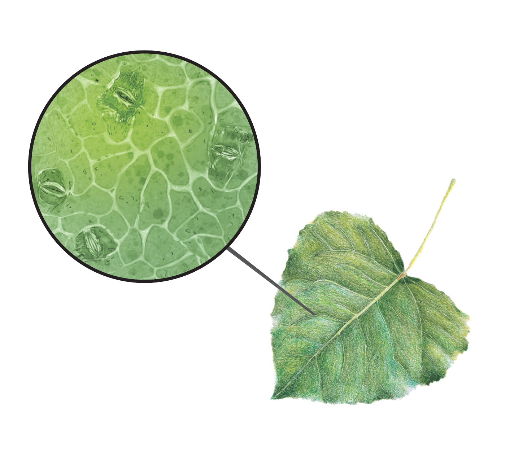

Adaptation and response to environmental change
~ the questions that drive us

Research themes
Hybridization and Adaptive Introgression
Status: Ongoing
Publications
{kind=link}
While we often think of species as being reproductively isolated from one another, this is not always the case. As a consequence of weak reproductive barriers, members of different species can interbreed in nature. When hybrids between two species are fertile, hybrids may then interbreed with members of the original species in a process known as backcrossing. Multiple generations of hybridization and subsequent backcrossing can facilitate the exchange of genetic material between parental species, a process known as introgression. Much of the research conducted in the Keller lab aims to understand if this exchange of genetic material is an adaptive process. For example, does genetic variation that increases tolerance to environmental stress in one species play the same role when it is introgressed into another species?
One current area of interest in the Keller lab is the susceptibility of hybrid poplars to infection by rust fungi in the genus Melampsora. One overarching question in the lab that this work addresses is the relationship between hybridization and local adaptation. The potential roles of ancestry and adaptation to local climatic variables as indicators of disease susceptibility in common garden experiments are being investigated.
Genomic Forecasting
Status: Ongoing
Publications
{kind=link}
Forecasting the responses of populations to climate change is a complex but important issue to understand as we face the potential for widespread climate maladaptation in the coming decades. This hits especially hard for long-lived, sessile organisms like forest trees, whose long-generation times and limited dispersal potential constrain the ability to adapt or track shifting climate. Recently, there has been increasing interest in combining genomics with climate models to forecast the short-term impacts of climate change on population adaptation. Our lab, in close collaboration with Matt Fitzaptrick’s lab has been developing computational approaches to predict short-term disruption of climate adaptation, known as “genomic offset” modelling. Since first introducing the concept and statistical framework for genomic offset in 2015 (Fitzpatrick and Keller 2015), we have worked to refine and extend the scope and application of offset models to predicting climate change maladaptation. This has involved simulation testing of genomic offset predictions, in collaboration with Katie Lotterhos’ lab, as well as testing the sensitivity of offset models to model choices such as the genomic loci used and the climate variables and future projection scenarios (Lachmuth et al. 2023, Frontiers).
In addition to building and refining the computational pipeline of genomic offset for forecasting climate change responses, our lab has been working on empirical testing of offset predictions, using a space-for-time approach that evaluates the effect of transferring genotypes from their source climate into one or more common garden sites, and predicting growth and fitness-traits from genomic offsets calculated between the source and garden site climates. Using poplar trees as a study system, we provided the first such common garden test of offset predictions, showing a strong negative response of growth with increasing genomic offset (Fitzpatrick et al. 2021). We have recently shown a similar result in red spruce (Picea rubens) across 3 seedling common gardens (Lachmuth et al. 2023; Eco Mon), as well as in a 60 year old red spruce provenance trial in northern New Hampshire (Verrico et al., in prep.).
Invasions
Status: Completed
The movement of species into new habitats allows populations that were previously geographically isolated to reproduce with each other and create novel genotypes through hybridization. Through environmental selection, novel genotypes can result in phenotypes that increase hybrid fitness and promote biological invasions. Furthermore, hybridization between genetically distinct species can result in changes to the genome size or species ploidy, which can alter the reproduction rate and promote invasion success. The rapid evolution of hybrid species in the introduced range can lead to a drastic shift in the stable state dynamics of the ecosystem, transforming the community assembly.
Past research has largely focused on the effects of hybridization in Centaura × moncktonii (C. jacea × C. nigra), a plant invasive to North America known as Japanese knapweed. Using a combination of field collections at hybrid zones in eastern North America and the Pacific northwest.
An assessment of the genome size, degree of introgression, and species traits reveals that hybrid individuals have smaller genomes and capitula traits that promote reproductive success, indicating that admixture of C. jacea and C. nigra can generate invasive genotypes that are environmentally selected for.
Research systems
Poplar
Status: Ongoing
Publications
Stomatal patterning of Poplar leaf.

{kind=link}
{kind=link}
Poplar is an established model system for tree genomics, and P. trichocarpa was the first tree to have its full genome sequenced. Whereas poplar populations harbor rich genetic diversity, and hybridization between poplar species is both common in the wild and a key aspect of poplar breeding programs, conventional approaches to genomic analysis, which generally depend on a reference genome from a single individual, are poorly suited to poplar genomics. In the Keller Lab, we have gone to great lengths to overcome this issue by leveraging the growing field of pan-genomics.
In the Keller Lab, research on hybridized poplar trees investigates the genetic and physiological trade-offs associated with increased photosynthetic efficiency and susceptibility to disease. F1 hybrids often display heterosis, resulting in traits such as increased stomatal density and larger stomatal pore sizes, which significantly enhance photosynthetic rates and industrial yield. These traits are relevant for applications such as biofuel and the paper production. However, this increased productivity is associated with a trade-off in reduced disease resistance to Melampsora, a rust pathogen commonly affecting poplar species. The current study aims to find the genetic basis of these trade-offs and to identify hybrids that retain high industrial yields while mitigating susceptibility to disease.
Leaf samples from F1 hybrids were collected at the UVM Horticulture Farm and analyzed for photosynthetic efficiency. Stomatal patterning, a key factor influencing both photosynthesis and pathogen susceptibility, is assessed through microscopic analysis of leaf imprints at 40x magnification. In addition to phenotypic analysis, RNAseq data from young hybrid leaves was utilized to identify genes involved in stomatal patterning and disease resistance. Field assessments of Melampsora rust severity were conducted by visually rating the extent of infection in each hybrid. This disease severity data, in combination with stomatal trait analysis and sequencing data, will provide insights into the genetic determinants of rust resistance. By correlating phenotypic and genotypic data, the study aims to identify specific genetic markers that can inform future breeding efforts to develop hybrid poplar varieties that balance enhanced productivity with improved disease resistance.
{kind=link}
{kind=link}
Red spruce
Status: Ongoing
Publications
Rangewide population genetics and local adaptation
Red spruce (Picea rubens) is an ecologically important conifer adapted to cool, moist, high-elevation sites mainly in the northeastern U.S. and southeastern Canada, but the southern tail of the range extends down into fragmented mountaintop populations in the Central and Southern Appalachians. Red spruce provides timber, critical habitat for rare and endemic wildlife species, and recreational value to humans. Our lab has explored how population size, range limits, and genetic diversity have impacted local adaptation to climate across red spruce’s range. [Anoob’s Proc Soc B paper, Thibaut’s papers]
Hybridization and adaptive introgression
For long-lived species with low genetic diversity, introgression—the transfer of genetic material from one lineage into the genome of another through repeated backcrossing—can be a powerful source of adaptive variation in the face of climate change. Red spruce hybridizes with its sister species black spruce (Picea mariana), and most red spruce trees found in the overlap between the two species’ ranges derive significant portions of their genome from past hybridization with black spruce. Recent work by our lab suggests that introgression from black spruce plays a key role in supporting red spruce’s capacity to adapt to climate gradients across its range [Anoob’s adaptive introgression paper here]. We use a combination of spatial modeling and landscape and population genomics to characterize the spatial and temporal natural history of hybridization, understand the role of selection in preserving introgressed regions of the genome, and determine under what conditions this introgression may be adaptive. We are also establishing a provenance trial of red and black spruce hybrids, which will serve as a long-term resource for linking the genomics of hybridization with adaptive traits.
Applied conservation
One of our lab’s major goals is to disseminate the findings of the scientific research to the broader community to inform conservation and restoration efforts on the ground. Red spruce is a species of conservation concern due to high climate change vulnerability and is the focus of several major restoration initiatives, notably the Central Appalachian Red Spruce Restoration Initiative (CASRI) and the Southern Appalachian Red Spruce Restoration Initiative (SASRI), which have planted tens of thousands of seedlings supported by The Nature Conservancy.
Spruce orchard project
In a project funded by the USDA-FS Forest Health Protection program, we are applying the genomic offset model, a method for forecasting genomic maladaptation to climate change, to establish a red spruce seed orchard in the Green Mountain National Forest. Forest managers have traditionally applied a “local is best” framework when choosing where to source seeds for restoration plantings. However, the genotypes currently found in a particular region may not be the ones best adapted to survive the future climate conditions that the region is likely to experience by the end of the century. We have sourced red spruce cuttings from trees that capture a diversity of genotypes predicted by our genomic offset models to be well-adapted to future climates in New England. Once the grafted seedlings become reproductive in 5-7 years, they will produce significant quantities of future climate-adapted seed to support reforestation and assisted migration plantings, a key need expressed by conservation partners in a workshop on red spruce hosted by our lab group in 2021.
Assisted migration project
We are working with our partners at The Nature Conservancy, the U.S. Fish and Wildlife Service, and the Vermont Agency of Natural Resources to collect seedling performance data from a network of recently established assisted migration field trials.
Kathryn Shallows from TNC approached the Keller lab in 2019 regarding red spruce restoration towards the southern range edge of its distribution, mainly in Maryland, Virginia and West Virginia. This led to a larger partnership that culminated in genomic assisted seed source selection for the restoration initiative at these sites. Instead of opting for a single source restoration initiative, we used a multiple seed source approach to improve the genetic diversity of the restoration stands to withstand the changing climate and environmental stressors. This source selection was carried out in the light of research done by Keller lab using the exome capture data and the common gardens set up at Vermont, Maryland and North Carolina. Three to four sources combinations per restoration site were selected for high genetic diversity and low genetic load.
Capblancq et al. (2021) has observed that early-life fitness of the red spruce had strong positive association with genetic diversity and negative association with genetic load, especially for the southern range edge of the red spruce distribution range. These seed source combinations were used as a recommendation list to Dave Seville (CASRI) to assess the seed production situation on the ground and raise them in the nursery for the restoration initiative. In 2021, TNC planted 58,000 red spruce seedlings at the restoration sites. Keller lab then carried out the restoration monitoring of these restoration sites in 2022, a whole year after the seedlings had been planted in the ground to assess the success of genomic assisted restoration of red spruce. Using this information, Prakash et al. (in prep) found that there were no “Super Seed Source” that outperformed other seed sources and the combination of seed sources outperformed any single source for the restoration success.
{kind=link}
Northeast Alpine
Status: Ongoing
{kind=link}
{kind=link}
{kind=link}
The northeastern North American alpine habitat, home to regionally rare and vulnerable species, occurs at high elevation in spatially isolated mountain regions. Since glacial retreat ~13,000 years ago, communities of alpine plants have shifted as highly connected tundra landscapes have retreated into today’s fragmented “sky islands” of various sizes. We have yet to understand the underlying adaptive mechanisms responsible for the persistence of alpine plants despite dramatic shifts in climate, though the genomic diversity of these plant communities have likely been shaped by this biogeographic history.
The potential impacts of climate change on northeastern alpine plants is a topic of considerable conservation concern. Little is known about levels of adaptive capacity within alpine plant populations, their degree of resilience or susceptibility to changes in climate, and how these might vary from peak to peak across the northeast. Thus, there is a need for studies investigating how the fitness of alpine plants may be driven by local adaptation or genetic variability in trait plasticity (GxE) to determine the vulnerability or resilience of these communities to climate change.
This project, funded by the National Science Foundation Biodiversity on a Changing Planet program, links paleoecology, community ecology, trait ecology, population genomics, and physical geography to identify the mechanisms underlying the persistence of tundra relics in Northeast alpine zones since deglaciation. By integrating these approaches, we aim to develop a process-based understanding of how Northeast alpine plant communities assembled, and how these communities persisted through past climate changes as an integration of species, traits, and genes. Our research area focuses on four alpine regions in Northeastern US: the Adirondacks (NY), the Green Mountains (VT), the White Mountains (NH), and Katahdin (ME).
Collaborators:
- Miereles Lab (University of Maine, Orono)
- Rominger Lab (University of Hawaiʻi at Mānoa)
- BEAST Lab (University of Maine, Orono)
- Dr. Caitlin McDonough MacKenzie
- Dr. Isaac Overcast
{kind=link}
{kind=link}
{kind=link}